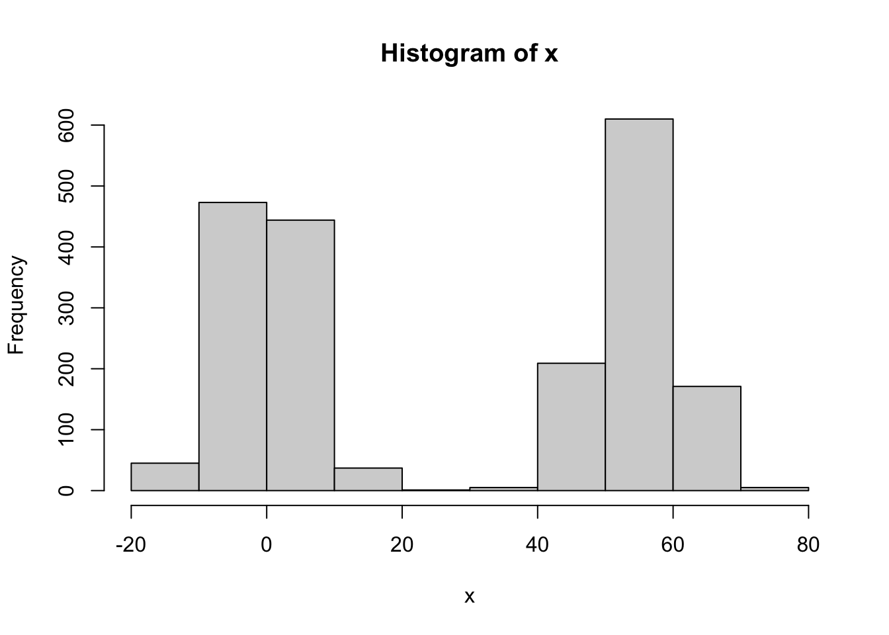
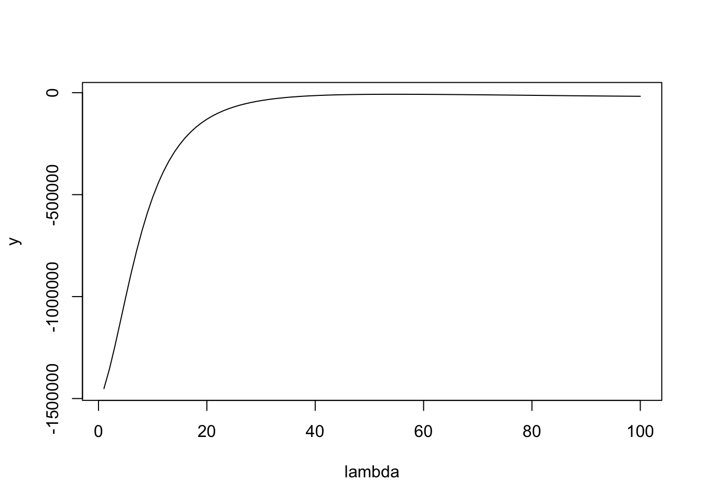
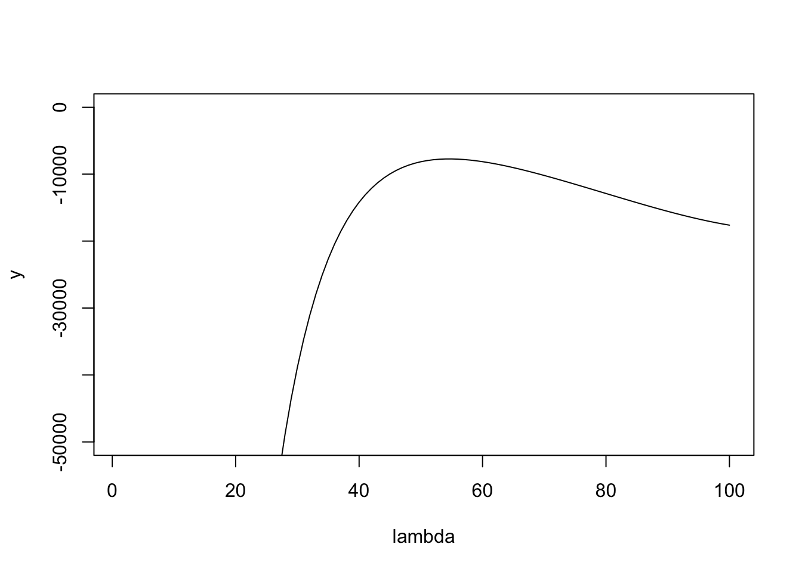

ebnm_binormal
Matthew Stephens
2025-03-12
Last updated: 2025-03-12
Checks: 7 0
Knit directory: misc/analysis/
This reproducible R Markdown analysis was created with workflowr (version 1.7.1). The Checks tab describes the reproducibility checks that were applied when the results were created. The Past versions tab lists the development history.
Great! Since the R Markdown file has been committed to the Git repository, you know the exact version of the code that produced these results.
Great job! The global environment was empty. Objects defined in the global environment can affect the analysis in your R Markdown file in unknown ways. For reproduciblity it’s best to always run the code in an empty environment.
The command set.seed(1) was run prior to running the
code in the R Markdown file. Setting a seed ensures that any results
that rely on randomness, e.g. subsampling or permutations, are
reproducible.
Great job! Recording the operating system, R version, and package versions is critical for reproducibility.
Nice! There were no cached chunks for this analysis, so you can be confident that you successfully produced the results during this run.
Great job! Using relative paths to the files within your workflowr project makes it easier to run your code on other machines.
Great! You are using Git for version control. Tracking code development and connecting the code version to the results is critical for reproducibility.
The results in this page were generated with repository version 0be1b11. See the Past versions tab to see a history of the changes made to the R Markdown and HTML files.
Note that you need to be careful to ensure that all relevant files for
the analysis have been committed to Git prior to generating the results
(you can use wflow_publish or
wflow_git_commit). workflowr only checks the R Markdown
file, but you know if there are other scripts or data files that it
depends on. Below is the status of the Git repository when the results
were generated:
Ignored files:
Ignored: .DS_Store
Ignored: .Rhistory
Ignored: .Rproj.user/
Ignored: analysis/.RData
Ignored: analysis/.Rhistory
Ignored: analysis/ALStruct_cache/
Ignored: data/.Rhistory
Ignored: data/methylation-data-for-matthew.rds
Ignored: data/pbmc/
Ignored: data/pbmc_purified.RData
Untracked files:
Untracked: .dropbox
Untracked: Icon
Untracked: analysis/GHstan.Rmd
Untracked: analysis/GTEX-cogaps.Rmd
Untracked: analysis/PACS.Rmd
Untracked: analysis/Rplot.png
Untracked: analysis/SPCAvRP.rmd
Untracked: analysis/abf_comparisons.Rmd
Untracked: analysis/admm_02.Rmd
Untracked: analysis/admm_03.Rmd
Untracked: analysis/bispca.Rmd
Untracked: analysis/cache/
Untracked: analysis/cholesky.Rmd
Untracked: analysis/compare-transformed-models.Rmd
Untracked: analysis/cormotif.Rmd
Untracked: analysis/cp_ash.Rmd
Untracked: analysis/eQTL.perm.rand.pdf
Untracked: analysis/eb_prepilot.Rmd
Untracked: analysis/eb_var.Rmd
Untracked: analysis/ebpmf1.Rmd
Untracked: analysis/ebpmf_sla_text.Rmd
Untracked: analysis/ebpower.Rmd
Untracked: analysis/ebspca_sims.Rmd
Untracked: analysis/explore_psvd.Rmd
Untracked: analysis/fa_check_identify.Rmd
Untracked: analysis/fa_iterative.Rmd
Untracked: analysis/flash_cov_overlapping_groups_init.Rmd
Untracked: analysis/flash_test_tree.Rmd
Untracked: analysis/flashier_newgroups.Rmd
Untracked: analysis/flashier_nmf_triples.Rmd
Untracked: analysis/flashier_pbmc.Rmd
Untracked: analysis/flashier_snn_shifted_prior.Rmd
Untracked: analysis/greedy_ebpmf_exploration_00.Rmd
Untracked: analysis/ieQTL.perm.rand.pdf
Untracked: analysis/lasso_em_03.Rmd
Untracked: analysis/m6amash.Rmd
Untracked: analysis/mash_bhat_z.Rmd
Untracked: analysis/mash_ieqtl_permutations.Rmd
Untracked: analysis/methylation_example.Rmd
Untracked: analysis/mixsqp.Rmd
Untracked: analysis/mr.ash_lasso_init.Rmd
Untracked: analysis/mr.mash.test.Rmd
Untracked: analysis/mr_ash_modular.Rmd
Untracked: analysis/mr_ash_parameterization.Rmd
Untracked: analysis/mr_ash_ridge.Rmd
Untracked: analysis/mv_gaussian_message_passing.Rmd
Untracked: analysis/nejm.Rmd
Untracked: analysis/nmf_bg.Rmd
Untracked: analysis/nonneg_underapprox.Rmd
Untracked: analysis/normal_conditional_on_r2.Rmd
Untracked: analysis/normalize.Rmd
Untracked: analysis/pbmc.Rmd
Untracked: analysis/pca_binary_weighted.Rmd
Untracked: analysis/pca_l1.Rmd
Untracked: analysis/poisson_nmf_approx.Rmd
Untracked: analysis/poisson_shrink.Rmd
Untracked: analysis/poisson_transform.Rmd
Untracked: analysis/qrnotes.txt
Untracked: analysis/ridge_iterative_02.Rmd
Untracked: analysis/ridge_iterative_splitting.Rmd
Untracked: analysis/samps/
Untracked: analysis/sc_bimodal.Rmd
Untracked: analysis/shrinkage_comparisons_changepoints.Rmd
Untracked: analysis/susie_cov.Rmd
Untracked: analysis/susie_en.Rmd
Untracked: analysis/susie_z_investigate.Rmd
Untracked: analysis/svd-timing.Rmd
Untracked: analysis/temp.RDS
Untracked: analysis/temp.Rmd
Untracked: analysis/test-figure/
Untracked: analysis/test.Rmd
Untracked: analysis/test.Rpres
Untracked: analysis/test.md
Untracked: analysis/test_qr.R
Untracked: analysis/test_sparse.Rmd
Untracked: analysis/tree_dist_top_eigenvector.Rmd
Untracked: analysis/z.txt
Untracked: code/multivariate_testfuncs.R
Untracked: code/rqb.hacked.R
Untracked: data/4matthew/
Untracked: data/4matthew2/
Untracked: data/E-MTAB-2805.processed.1/
Untracked: data/ENSG00000156738.Sim_Y2.RDS
Untracked: data/GDS5363_full.soft.gz
Untracked: data/GSE41265_allGenesTPM.txt
Untracked: data/Muscle_Skeletal.ACTN3.pm1Mb.RDS
Untracked: data/P.rds
Untracked: data/Thyroid.FMO2.pm1Mb.RDS
Untracked: data/bmass.HaemgenRBC2016.MAF01.Vs2.MergedDataSources.200kRanSubset.ChrBPMAFMarkerZScores.vs1.txt.gz
Untracked: data/bmass.HaemgenRBC2016.Vs2.NewSNPs.ZScores.hclust.vs1.txt
Untracked: data/bmass.HaemgenRBC2016.Vs2.PreviousSNPs.ZScores.hclust.vs1.txt
Untracked: data/eb_prepilot/
Untracked: data/finemap_data/fmo2.sim/b.txt
Untracked: data/finemap_data/fmo2.sim/dap_out.txt
Untracked: data/finemap_data/fmo2.sim/dap_out2.txt
Untracked: data/finemap_data/fmo2.sim/dap_out2_snp.txt
Untracked: data/finemap_data/fmo2.sim/dap_out_snp.txt
Untracked: data/finemap_data/fmo2.sim/data
Untracked: data/finemap_data/fmo2.sim/fmo2.sim.config
Untracked: data/finemap_data/fmo2.sim/fmo2.sim.k
Untracked: data/finemap_data/fmo2.sim/fmo2.sim.k4.config
Untracked: data/finemap_data/fmo2.sim/fmo2.sim.k4.snp
Untracked: data/finemap_data/fmo2.sim/fmo2.sim.ld
Untracked: data/finemap_data/fmo2.sim/fmo2.sim.snp
Untracked: data/finemap_data/fmo2.sim/fmo2.sim.z
Untracked: data/finemap_data/fmo2.sim/pos.txt
Untracked: data/logm.csv
Untracked: data/m.cd.RDS
Untracked: data/m.cdu.old.RDS
Untracked: data/m.new.cd.RDS
Untracked: data/m.old.cd.RDS
Untracked: data/mainbib.bib.old
Untracked: data/mat.csv
Untracked: data/mat.txt
Untracked: data/mat_new.csv
Untracked: data/matrix_lik.rds
Untracked: data/paintor_data/
Untracked: data/running_data_chris.csv
Untracked: data/running_data_matthew.csv
Untracked: data/temp.txt
Untracked: data/y.txt
Untracked: data/y_f.txt
Untracked: data/zscore_jointLCLs_m6AQTLs_susie_eQTLpruned.rds
Untracked: data/zscore_jointLCLs_random.rds
Untracked: explore_udi.R
Untracked: output/fit.k10.rds
Untracked: output/fit.nn.pbmc.purified.rds
Untracked: output/fit.nn.rds
Untracked: output/fit.nn.s.001.rds
Untracked: output/fit.nn.s.01.rds
Untracked: output/fit.nn.s.1.rds
Untracked: output/fit.nn.s.10.rds
Untracked: output/fit.snn.s.001.rds
Untracked: output/fit.snn.s.01.nninit.rds
Untracked: output/fit.snn.s.01.rds
Untracked: output/fit.varbvs.RDS
Untracked: output/fit2.nn.pbmc.purified.rds
Untracked: output/glmnet.fit.RDS
Untracked: output/snn07.txt
Untracked: output/snn34.txt
Untracked: output/test.bv.txt
Untracked: output/test.gamma.txt
Untracked: output/test.hyp.txt
Untracked: output/test.log.txt
Untracked: output/test.param.txt
Untracked: output/test2.bv.txt
Untracked: output/test2.gamma.txt
Untracked: output/test2.hyp.txt
Untracked: output/test2.log.txt
Untracked: output/test2.param.txt
Untracked: output/test3.bv.txt
Untracked: output/test3.gamma.txt
Untracked: output/test3.hyp.txt
Untracked: output/test3.log.txt
Untracked: output/test3.param.txt
Untracked: output/test4.bv.txt
Untracked: output/test4.gamma.txt
Untracked: output/test4.hyp.txt
Untracked: output/test4.log.txt
Untracked: output/test4.param.txt
Untracked: output/test5.bv.txt
Untracked: output/test5.gamma.txt
Untracked: output/test5.hyp.txt
Untracked: output/test5.log.txt
Untracked: output/test5.param.txt
Unstaged changes:
Modified: .gitignore
Modified: analysis/flashier_log1p.Rmd
Modified: analysis/flashier_sla_text.Rmd
Modified: analysis/logistic_z_scores.Rmd
Modified: analysis/mr_ash_pen.Rmd
Modified: analysis/nmu_em.Rmd
Modified: analysis/susie_flash.Rmd
Modified: misc.Rproj
Note that any generated files, e.g. HTML, png, CSS, etc., are not included in this status report because it is ok for generated content to have uncommitted changes.
These are the previous versions of the repository in which changes were
made to the R Markdown (analysis/ebnm_binormal.Rmd) and
HTML (docs/ebnm_binormal.html) files. If you’ve configured
a remote Git repository (see ?wflow_git_remote), click on
the hyperlinks in the table below to view the files as they were in that
past version.
| File | Version | Author | Date | Message |
|---|---|---|---|---|
| Rmd | 0be1b11 | Matthew Stephens | 2025-03-12 | workflowr::wflow_publish("analysis/ebnm_binormal.Rmd") |
library(ashr)Introduction
I want to try implementing ebnm for a simple bimodal prior, consisting of a mixture of two normals, one with mean 0 and one with non-zero mean.
With this prior on \(\theta\), and \(x_i | \theta \sim N(\theta,s^2)\) we have the marginal likelihood \[x_i \sim \pi_0 N(0,\lambda^2 s_0^2+s^2) + \pi_1 N(\lambda, \lambda^2 s_0^2+s^2)\] where \(\lambda\) is a scaling factor to be estimated. For now I fix \(\pi_0=\pi_1=0.5\) and \(s_0\) to be smallish (it controls how bimodal this prior is).
Here I implement this marginal likelihood and its gradient (the latter obtained with the help of google AI).
dbinormal = function (x,s,s0,lambda,log=TRUE){
pi0 = 0.5
pi1 = 0.5
s2 = s^2
s02 = s0^2
l0 = dnorm(x,0,sqrt(lambda^2 * s02 + s2),log=TRUE)
l1 = dnorm(x,lambda,sqrt(lambda^2 * s02 + s2),log=TRUE)
logsum = log(pi0*exp(l0) + pi1*exp(l1))
m = pmax(l0,l1)
logsum = m + log(pi0*exp(l0-m) + pi1*exp(l1-m))
if (log) return(sum(logsum))
else return(exp(sum(logsum)))
}
# Numerical gradient calculation
numerical_grad_dbinormal <- function(x, s, s0, lambda, delta = 1e-6) {
f_plus <- dbinormal(x, s, s0, lambda + delta)
f_minus <- dbinormal(x, s, s0, lambda - delta)
return((f_plus - f_minus) / (2 * delta))
}
# Analytical gradient calculation
analytical_grad_dbinormal <- function(x, s, s0, lambda) {
pi0 = 0.5
pi1 = 0.5
s2 = s^2
s02 = s0^2
sigma_lambda_sq <- lambda^2 * s02 + s2
l0 <- dnorm(x, 0, sqrt(sigma_lambda_sq), log=TRUE)
l1 <- dnorm(x, lambda, sqrt(sigma_lambda_sq), log=TRUE)
dl0_dlambda <- -lambda * s02 / sigma_lambda_sq + lambda * s02 * x^2 / (sigma_lambda_sq^2)
dl1_dlambda <- (x - lambda - lambda*s02) / sigma_lambda_sq + (x - lambda)^2 * lambda * s02 / (sigma_lambda_sq)^2
# stably compute w0 and w1
m <- pmax(l0, l1) # Find the maximum of l0 and l1
w0 <- pi0 * exp(l0 - m) / (pi0 * exp(l0 - m) + pi1 * exp(l1 - m)) # Stable w0
w1 <- pi1 * exp(l1 - m) / (pi0 * exp(l0 - m) + pi1 * exp(l1 - m)) # Stable w1
grad_logsum <- w0 * dl0_dlambda + w1 * dl1_dlambda
return(sum(grad_logsum))
}
# Example usage and comparison
x <- c(0.5,1,2)
s <- 1
s0 <- 0.5
lambda <- 1
num_grad <- numerical_grad_dbinormal(x, s, s0, lambda)
ana_grad <- analytical_grad_dbinormal(x, s, s0, lambda)
cat("Numerical Gradient:", num_grad, "\n")Numerical Gradient: 0.1901379 cat("Analytical Gradient:", ana_grad, "\n")Analytical Gradient: 0.1901379 Optimization using optim
Now I will try using optim to optimize this function. First I simulate some data.
# Simulate data
set.seed(1)
s = 1
s0 = 0.1
lambda = exp(4)
s2 = s^2
s02 = s0^2
n = 1000
x = c(rnorm(n,0,sqrt(lambda^2 * s02 + s2)),rnorm(n,lambda,sqrt(lambda^2 * s02 + s2)))
hist(x)
What I found is that it seems important to use a method that can be given bounds. (Note that (0,max(x)) are natural bounds). Eg Brents method, or L-BFGS-B. Using BFGS only works if you get the starting value right. (Possibly it works if you initialize at the upper bound, but it is hard to be confident that this will work generally).
objective_function <- function(lambda) {
-dbinormal(x, s, s0, lambda) # Negative for minimization
}
gradient_function <- function(lambda) {
-analytical_grad_dbinormal(x, s, s0, lambda) # Negative gradient for minimization
}
# optimization result initializing at true value
optim(par = lambda,
fn = objective_function,
gr = gradient_function,
method = "BFGS") # Using BFGS which uses gradient$par
[1] 54.59053
$value
[1] 7727.426
$counts
function gradient
10 3
$convergence
[1] 0
$message
NULL#optim result initializing at 1
optim(par = 1,
fn = objective_function,
gr = gradient_function,
method = "BFGS") # Using BFGS which uses gradient$par
[1] 83299.15
$value
[1] 21279.41
$counts
function gradient
100 100
$convergence
[1] 1
$message
NULL#optim result initializing at exp(3)
optim(par = exp(3),
fn = objective_function,
gr = gradient_function,
method = "BFGS") # Using BFGS which uses gradient$par
[1] 16591.32
$value
[1] 18052.82
$counts
function gradient
100 100
$convergence
[1] 1
$message
NULL#optim result initializing at max(x)
optim(par = max(x),
fn = objective_function,
gr = gradient_function,
method = "BFGS") # Using BFGS which uses gradient$par
[1] 54.59053
$value
[1] 7727.426
$counts
function gradient
24 8
$convergence
[1] 0
$message
NULL#optim result using L-BFGS-B
optim(par = 1,
fn = objective_function,
lower = 0, upper = max(x),
method = "L-BFGS-B") $par
[1] 54.59053
$value
[1] 7727.426
$counts
function gradient
9 9
$convergence
[1] 0
$message
[1] "CONVERGENCE: REL_REDUCTION_OF_F <= FACTR*EPSMCH"#optim result using Brent
optim(par = 1,
fn = objective_function,
lower = 0, upper = max(x),
method = "Brent") $par
[1] 54.59053
$value
[1] 7727.426
$counts
function gradient
NA NA
$convergence
[1] 0
$message
NULLHere is a plot of the likelihood surface. You can see that if it starts at lambda too small then the gradient is huge, which I believe causes it to overshoot to crazy large values of lambda in methods where there is no upper bound. Maybe initializing at the upper bound (max(x)) will solve this, but it seems safer to use the bounded methods.
lambda = seq(1,100,length=100)
y = sapply(lambda,function(l) dbinormal(x,s,s0,l,log=TRUE))
plot(lambda,y,type="l")
plot(lambda,y,type="l",ylim=c(-50000,0))
Here I use optimize (which is the same as optim with method=“Brent”) to find the maximum likelihood estimate of lambda. The following fixes s0=0.01. It may be worth investigating the idea of fixing s0 to be 0.01s to kind of fix the shrinkage behavior?
ebnm_binormal = function(x,s){
s0 = 0.01
lambda = optimize(function(lambda){-dbinormal(x,s,s0,lambda,log=TRUE)},
lower = 0, upper = max(x))$minimum
g = ashr::normalmix(pi=c(0.5,0.5), mean=c(0,lambda), sd=c(lambda * s0,lambda * s0))
postmean = ashr::postmean(g,ashr::set_data(x,s))
postsd = ashr::postsd(g,ashr::set_data(x,s))
return(list(g = g, posterior = data.frame(mean=postmean,sd=postsd)))
}
res = ebnm_binormal(x,s)
plot(x,res$posterior$mean)
sessionInfo()R version 4.4.2 (2024-10-31)
Platform: aarch64-apple-darwin20
Running under: macOS Sequoia 15.3.1
Matrix products: default
BLAS: /Library/Frameworks/R.framework/Versions/4.4-arm64/Resources/lib/libRblas.0.dylib
LAPACK: /Library/Frameworks/R.framework/Versions/4.4-arm64/Resources/lib/libRlapack.dylib; LAPACK version 3.12.0
locale:
[1] en_US.UTF-8/en_US.UTF-8/en_US.UTF-8/C/en_US.UTF-8/en_US.UTF-8
time zone: America/Chicago
tzcode source: internal
attached base packages:
[1] stats graphics grDevices utils datasets methods base
other attached packages:
[1] ashr_2.2-63
loaded via a namespace (and not attached):
[1] Matrix_1.7-2 jsonlite_1.8.9 compiler_4.4.2 promises_1.3.2
[5] Rcpp_1.0.14 stringr_1.5.1 git2r_0.35.0 later_1.4.1
[9] jquerylib_0.1.4 yaml_2.3.10 fastmap_1.2.0 lattice_0.22-6
[13] R6_2.5.1 mixsqp_0.3-54 workflowr_1.7.1 knitr_1.49
[17] tibble_3.2.1 rprojroot_2.0.4 bslib_0.9.0 pillar_1.10.1
[21] rlang_1.1.5 cachem_1.1.0 SQUAREM_2021.1 stringi_1.8.4
[25] httpuv_1.6.15 xfun_0.50 fs_1.6.5 sass_0.4.9
[29] invgamma_1.1 truncnorm_1.0-9 cli_3.6.3 magrittr_2.0.3
[33] digest_0.6.37 grid_4.4.2 irlba_2.3.5.1 rstudioapi_0.17.1
[37] lifecycle_1.0.4 vctrs_0.6.5 evaluate_1.0.3 glue_1.8.0
[41] whisker_0.4.1 rmarkdown_2.29 tools_4.4.2 pkgconfig_2.0.3
[45] htmltools_0.5.8.1